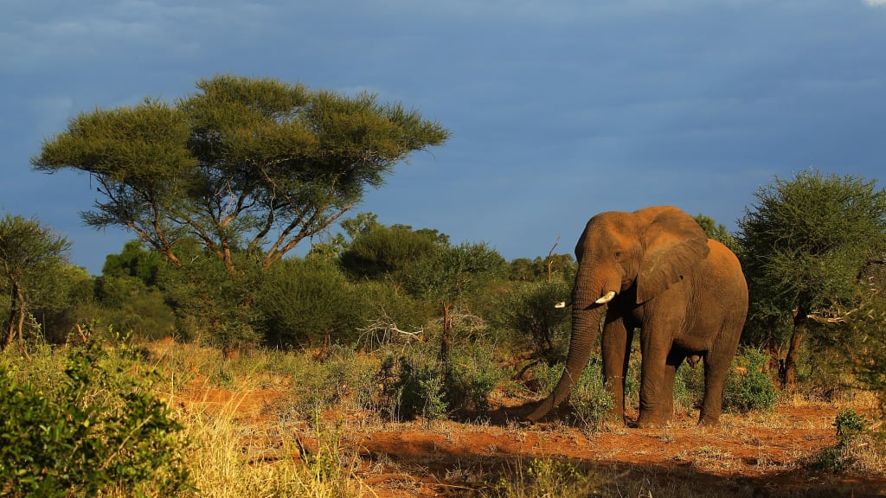
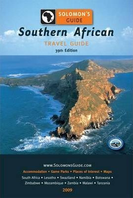
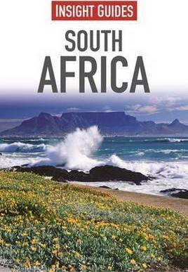
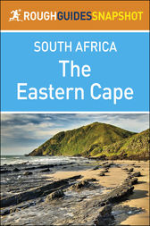

Travel to live, Live to Travel
Travel to live, Live to Travel

Africa has 54 sovereign countries—the most on any continent—and is the second largest continent in terms of both land area and population. Africa is bounded by the Mediterranean Sea to the north, by the Atlantic Ocean to the west, by the Red Sea to the northeast, and by the Indian Ocean to the southeast. Africa is a vast continent spanning over 8,000km (5,000 mi) north to south and 7,500km (4,800 mi) east to west (not including islands) and contains a wide array of peoples, skin colours, religions, and cultures. Africa contains the world's longest river—the 6,650km long (4,100 mi) Nile River running from Burundi to Egypt—while the Congo River in the DRC is the second largest in terms of discharge as well as the deepest with a depth of over 230m (750 ft) in some spots. Tanzania's Mount Kilimanjaro is the world's tallest free-standing mountain at 5,890m (19,340 ft). Djibouti's Lake Assal is the second lowest point on
Earth, the saltiest lake outside
Antarctica, and one of the hottest places on Earth
.
Accomendation-Generally backpackers have dorms that run from around $8-20 for a dorm bed and upwards of $50 for a private bungalow with a beach view.
Transportation-Baz Bus is specifically geared towards backpackers and offers a 21-day hop-on hop-off pass for around $350, stopping at various backpackers accommodation. However once at the destination it’s difficult to get around, and the bus doesn’t run daily. If taking the other options, you’ll have to get from the depot to your hotel which will require a taxi.
Food-To save money, cook your own food. Grocery stores are plentiful and have reasonable prices. Backpackers accommodation have communal kitchens where guests can cook and store their own food. By at least cooking your own breakfast and the occasional dinner, you can save a lot of money.
|  | Solomon's Guide: A Travel Guide to Southern Africa This edition contains full-colour pages of relavant tourism infromation on Southern Africa. Which covers the main tourism countries such as, Lesotho, Botswana, Zimbabwe, Zambia, Malawi and Tanzania and provides a reference for information on the Southern African Region, and a choise of upmarket accommodation alternatives. | East African WildlifeThis indispensable guide offers all the information you need to get the most out of wildlife watching in East Africa. Accessible and beautifully illustrated, this revised second edition of Bradt's much praised guide to East African Wildlife will appeal to both the first-time visitor and to the serious naturalist seeking a compact volume to carry around | |
|  | Insight Guides: South Africa South Africa is a land of exceptional natural beauty and cultural variety, a "rainbow nation" packed with important historical landmarks, myriad activities, and unsurpassable wildlife. . Coverage of key subjects including Nelson Mandela and life in townships adds cultural understanding. |  | The Eastern Cape (Rough Guides Snapshot) The Rough Guide Snapshot to the Eastern Cape is the ultimate travel guide to this region of South Africa. It leads you through the region with reliable information and comprehensive coverage of all the sights and attractions, from Port Elizabeth to Addo Elephant National Park and the Karoo to . |